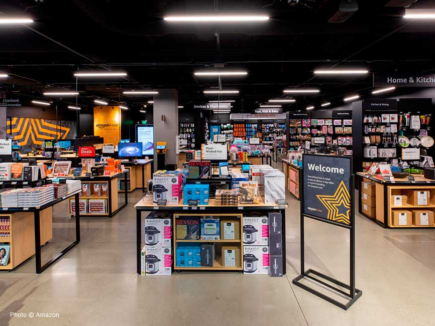

- 
Amazon
Amazon, Inc. es una compañía estadounidense de comercio electrónico y servicios de computación en la nube a todos los niveles con sede en la ciudad estadounidense de Seattle, Estado de Washington. Su lema es: From A to Z. Es una de las primeras grandes compañías en vender bienes a través de Internet.
Fundador
Jeff Preston Bezos es un empresario y magnate estadounidense. Es el fundador y director ejecutivo de la empresa de venta online Amazon.En 2015 fue el quinto hombre más rico del mundo, y en 2017 alcanzó el primer puesto de la lista Forbes. En abril de 1994, Bezos dejó su empleo como vicepresidente de D. E. Shaw & Co., una firma de Wall Street, y se trasladó a Seattle, donde comenzó a trabajar en un plan de negocios para lo que finalmente se convertiría en Amazon.com. Jeff Bezos creó la compañía Cadabra el 5 de julio de 1994.